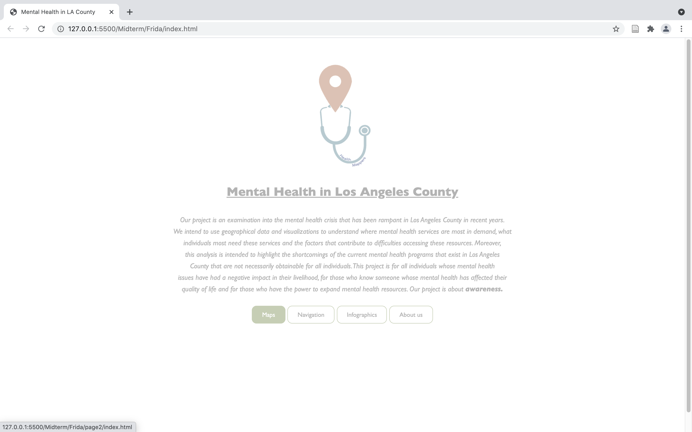
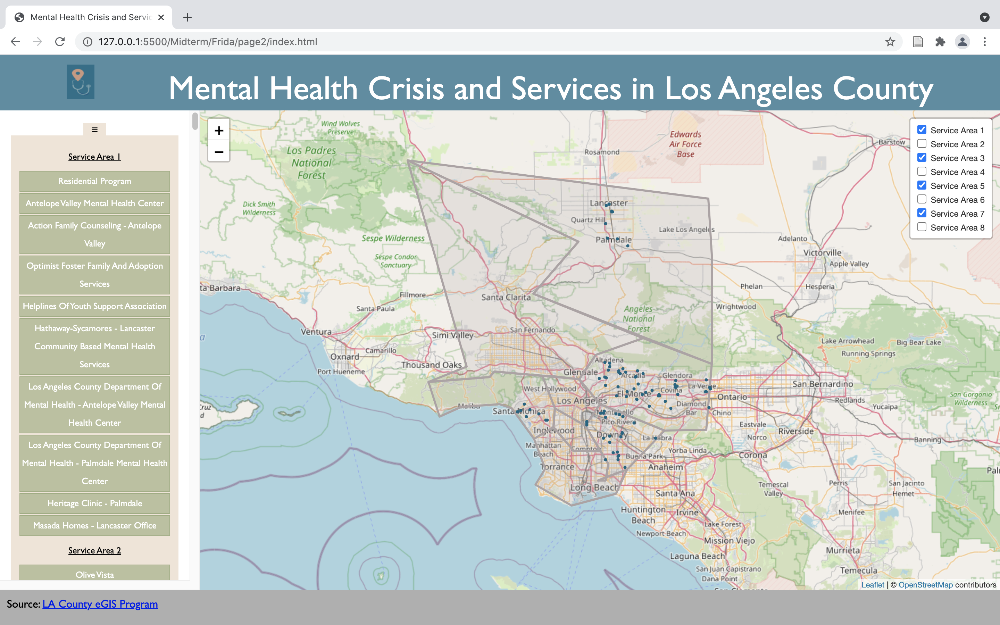
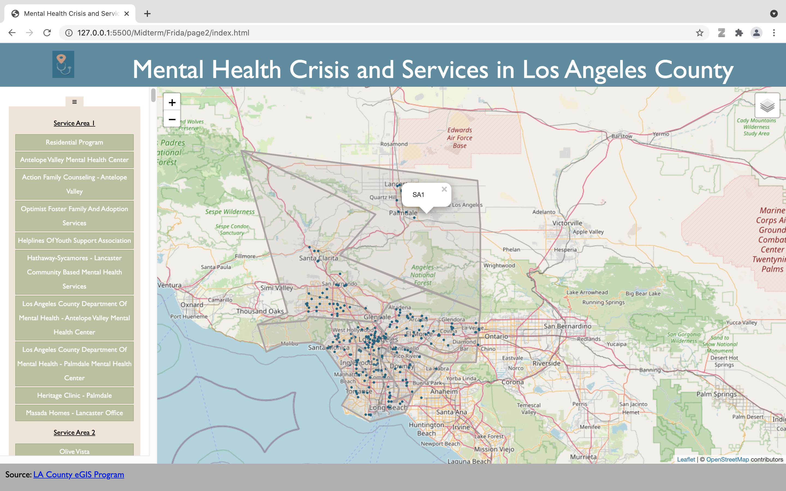
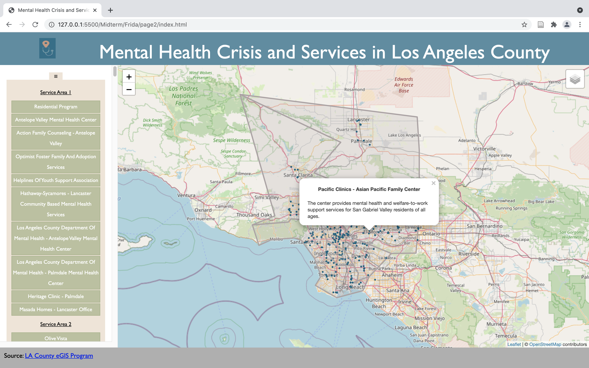
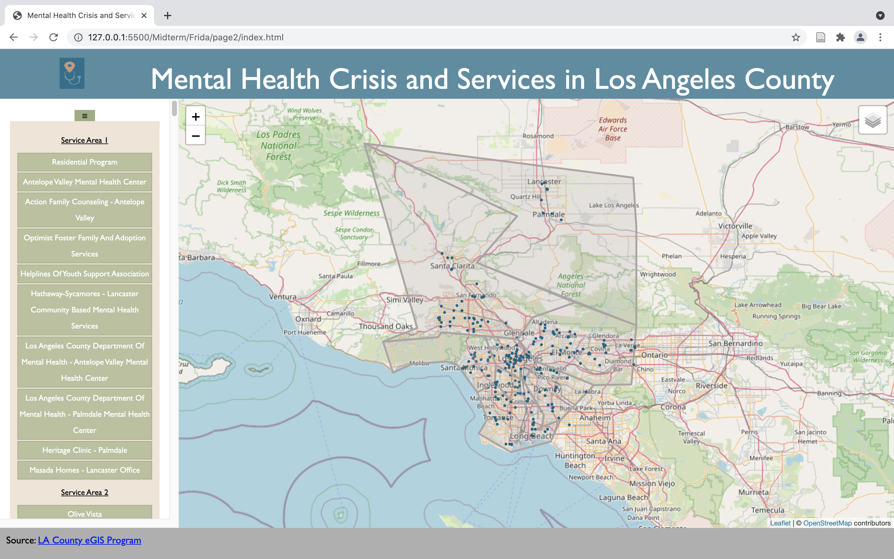
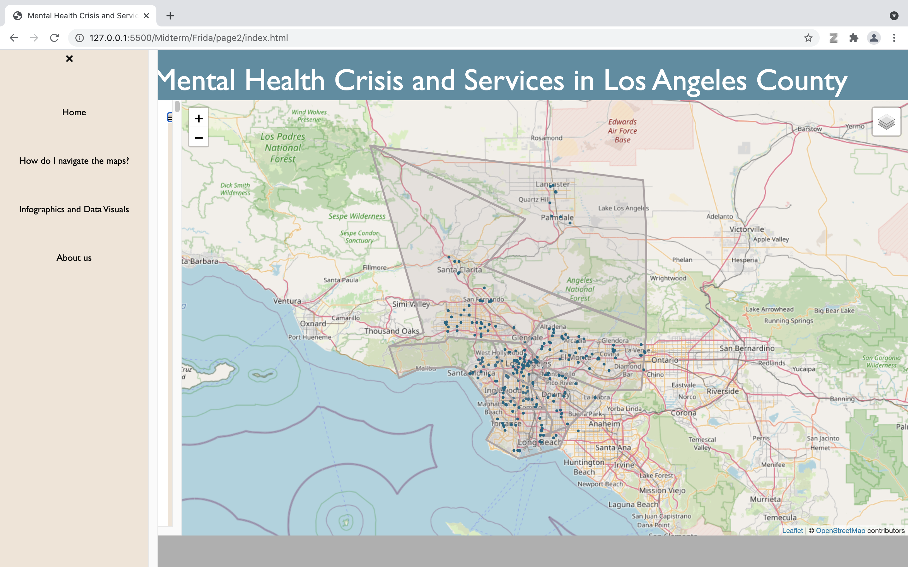

Steps to navigate the Service Areas and Mental Health Programs map
In the landing page click the "Maps" tab.

That button will redirect you to the Service Areas and Mental Health Programs map.
Use the control box in the right side of the map to turn the mental health programs of each service area
on/off.

You can zoom in/out using the +/- buttons in the top left side of the map.
on/off.

You can select each polygon to get its corresponding service area number.

You can hoover over each blue marker to get more information about each facility.
The sidebar on the left contains a list of all the Mental Health Programs in LA county
by service area.

You can click the ☰ icon to open the main menu.

